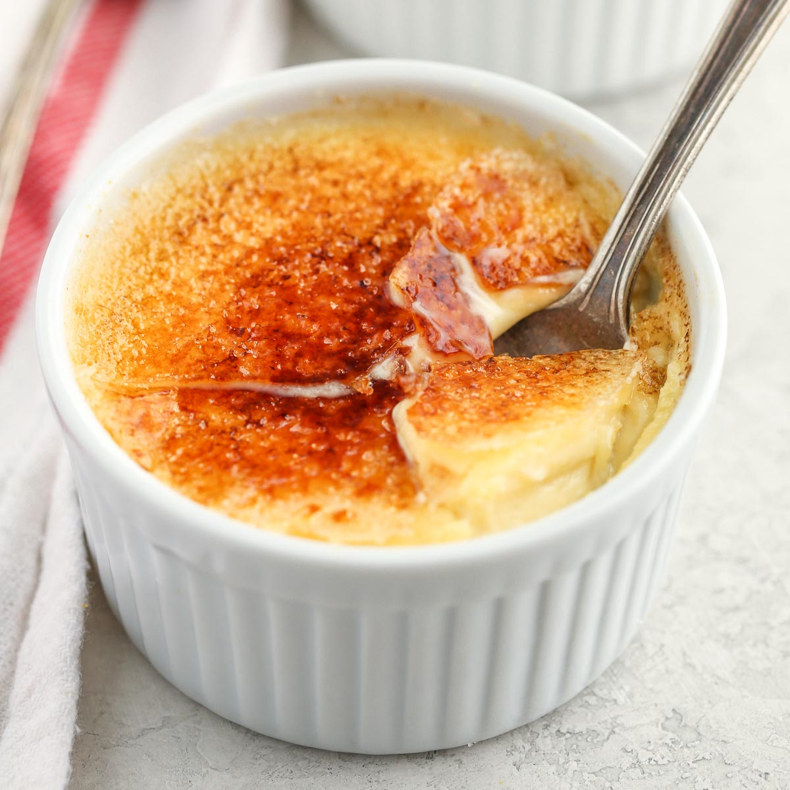

Creme Brulee

Description
Five simple ingredients – cream, vanilla, salt, eggs and sugar – make for an exquisitely rich and elegant dessert.
Most crème brûlée recipes require the use of a small propane torch to achieve the crackly sugar top, but this version offers a simpler (and safer) solution: your oven's broiler. One thing to note: Be sure to let the custard set for several hours in the refrigerator before brûléeing the top, otherwise you'll end up with soupy custard.
Ingredients
- 2 cups heavy or light cream, or half-and-half
- 1 vanilla bean, split lengthwise, or
1 tsp vanilla extract
- 1/8 tsp salt
- 5 egg yolks
- 1/2 cup sugar, more for topping
Steps
- Heat oven to 325 degrees. In a saucepan, combine cream, vanilla bean and salt and cook over low heat just until hot. Let sit for a few minutes, then discard vanilla bean. (If using vanilla extract, add it now.)
- In a bowl, beat yolks and sugar together until light. Stir about a quarter of the cream into this mixture, then pour sugar-egg mixture into cream and stir. Pour into four 6-ounce ramekins and place ramekins in a baking dish; fill dish with boiling water halfway up the sides of the dishes. Bake for 30 to 40 minutes, or until centers are barely set. Cool completely. Refrigerate for several hours and up to a couple of days.
- When ready to serve, top each custard with about a teaspoon of sugar in a thin layer. Place ramekins in a broiler 2 to 3 inches from heat source. Turn on broiler. Cook until sugar melts and browns or even blackens a bit, about 5 minutes. Serve within two hours.